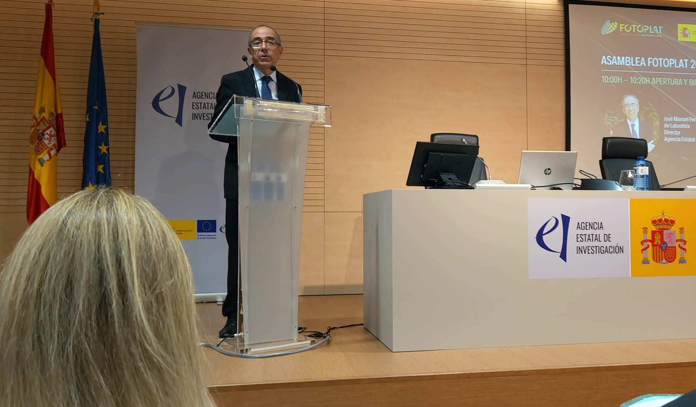
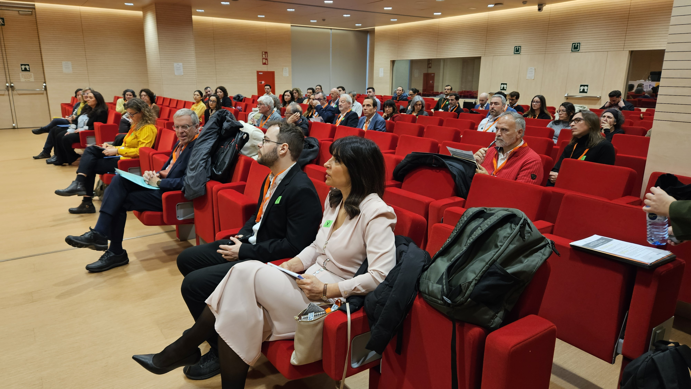

El programa en cifras
Historia y objetivos
Origen del programa
La primera convocatoria de ayudas del programa Ramón y Cajal fue publicada en el BOE del 19 de abril de 2001 con una dotación económica de 122,22 millones de euros, con el objetivo de incorporar al sistema español de ciencia, tecnología e innovación a investigadores posdoctorales con trayectorias brillantes y prometedoras.
Desde su inicio, las solicitudes de participación son presentadas tanto por los Centros de I+D, que ofertan plazas en todas las áreas de conocimiento, como por las personas candidatas. Tras la evaluación y resolución, los seleccionados contactan con los centros para firmar los acuerdos de incorporación y el contrato.
Objetivo principal
Promover la incorporación en organismos de investigación del Sistema Español de Ciencia, Tecnología e Innovación de personal investigador, tanto español como extranjero, con una trayectoria destacada, con el fin de que adquieran las competencias y capacidades que les permitan obtener un puesto de carácter estable.
A partir de la convocatoria 2026, los objetivos se amplían para facilitar el desarrollo de líneas de investigación propias, la creación de grupos, la retención de talento y la mejora de la participación española en las convocatorias del ERC.

Evolución del programa
A lo largo de sus 25 años, el programa ha incorporado cambios significativos para adaptarse a las necesidades del sistema de I+D+i:
Primera convocatoria publicada el 19 de abril de 2001. Dotación de 122,22 M€. Ayudas de 5 años con cofinanciación de contratación y dotación adicional para investigación.
Se incluye como gasto elegible una ayuda para la creación de puestos de trabajo de carácter permanente. Los Centros de I+D que creen puestos permanentes en el ámbito del investigador/a contratado recibirán una ayuda económica adicional.
Con la desaparición de la convocatoria Juan de la Cierva Incorporación, se incluye un turno específico para jóvenes investigadores con fecha de doctorado entre 2017 y 2019. Este turno desaparece en 2022.
Se reservan ayudas específicas para atraer investigadores del extranjero (ayuda para la atracción del talento) con dotación adicional incrementada. La ayuda se divide en dos fases: primera fase de 3 años (37.800 €/año) y segunda fase de 2 años (46.900 €/año) condicionada a evaluación positiva de la actividad (criterios R3).
Se incorpora la obligatoriedad de que las entidades beneficiarias garanticen el compromiso de crear puestos de trabajo permanentes con perfil adecuado a las plazas cubiertas.
La mayor transformación del programa: financiación de proyecto propio, entrevista en la evaluación, incentivos para el ERC, estabilización con dotación económica de 75.000 €, e integración de la convocatoria de Consolidación Investigadora.
Características de la ayuda (convocatoria 2024)
Elegibilidad
Investigadores/as posdoctorales con fecha de obtención del grado de doctor comprendida en la ventana de elegibilidad definida en cada convocatoria. Turno general y turno de atracción de talento (80 ayudas reservadas para investigadores en el extranjero).
Duración y fases
Primera fase (3 años): 37.800 €/año para cofinanciar salario y cuota empresarial de la Seguridad Social. Afianzamiento de capacidades.
Segunda fase (2 años): 46.900 €/año. Acceso tras evaluación positiva (criterios R3).
Dotación adicional
50.000 € para gastos de investigación. En caso de atracción de talento, se incrementa en 50.000 € adicionales. Con la convocatoria 2026, esta dotación es sustituida por la financiación de un proyecto completo.
Impacto del programa

Fortalecimiento de la carrera investigadora
El programa ofrece un entorno propicio para el desarrollo del liderazgo científico emergente, permitiendo a los investigadores construir trayectorias independientes.
Efecto tractor
Los investigadores RYC actúan como catalizadores para atraer talento y recursos adicionales a las instituciones del sistema español de I+D+i.
Beneficio institucional
Las instituciones receptoras ganan en talento, recursos y prestigio, fortaleciendo sus capacidades de investigación en todas las áreas de conocimiento.
Posicionamiento europeo
Con las nuevas modificaciones de 2026, el programa busca dar un salto cualitativo para situar a España donde le corresponde en el Espacio Europeo de Investigación.
25 años de excelencia científica
Descubre la historia completa del programa, testimonios de investigadores y los hitos más destacados en la web conmemorativa del 25 aniversario.
Web 25 Años RYC ↗